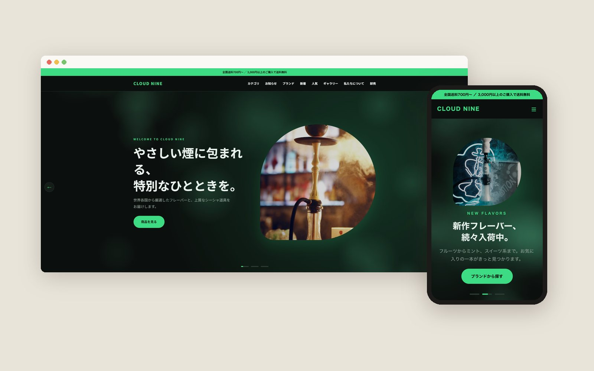
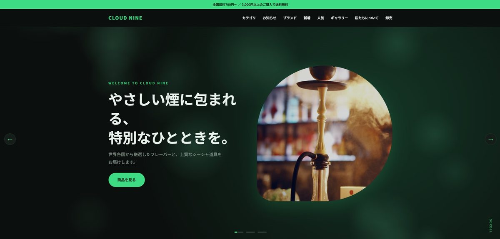
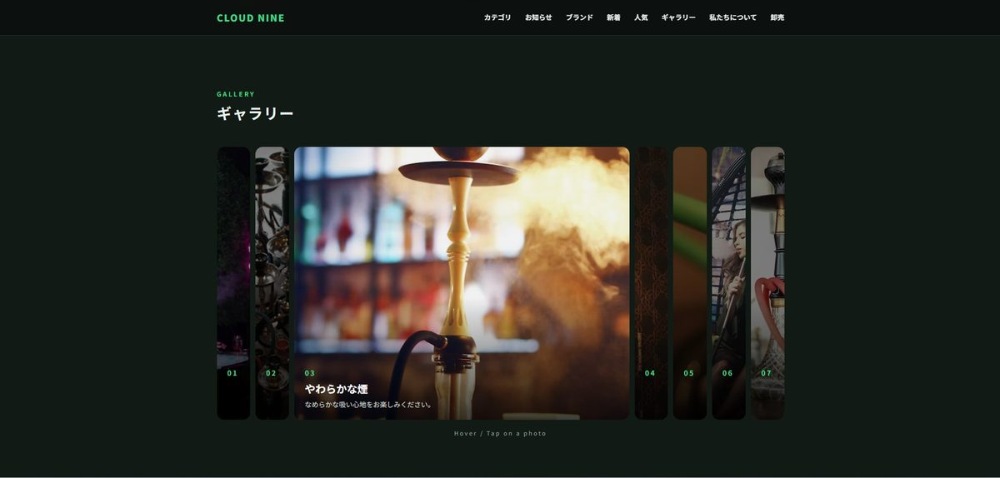

ECサイト／授業課題
CLOUD NINE
架空のシーシャ専門店「CLOUD NINE」のサイトです。20歳未満が閲覧しないよう、最初に年齢確認を表示します。煙をイメージした暗めのデザインにしました。
- 制作
- 授業課題（1人）
- 期間
- 1日
- 担当
- 企画・構成／デザインと実装はAI（主にGemini）
- ツール
- Gemini
- 素材
- 写真はUnsplash（フリー素材）

目的とターゲット
ターゲット：シーシャが好きな人。
コンセプト：暗めのデザインで、落ち着いた大人の時間を表現する。
工夫したこと
- 年齢確認：サイトを開くと最初に年齢確認が出て、20歳以上でなければ閲覧できないようにした
- ファーストビュー：写真を丸く切り抜き、JavaScriptで約6秒ごとに切り替わる演出にした
- ギャラリー：マウスを乗せた写真が大きく広がる形にした（スマホはタップ）


学んだこと
ユーザビリティの大切さを学びました。一度完成させてから実際に見てみると、導線が悪く、見にくいサイトになっていました。作って終わりではなく、使う人の立場で見直すことを、このときから意識するようになりました。